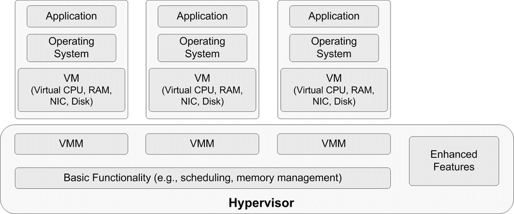
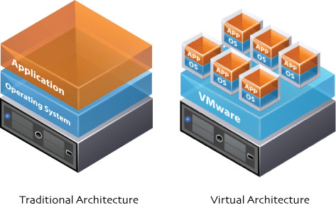
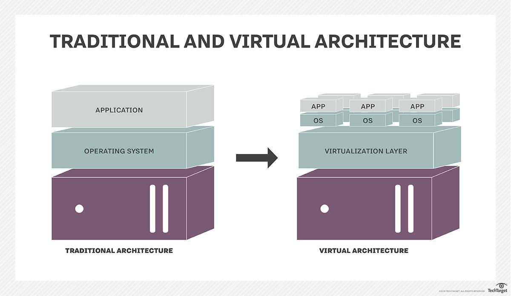

Virtualization
What is virtualization?
Virtualization is technology that allows you to create multiple simulated environments or dedicated resources from a single, physical hardware system. Software called a hypervisor connects directly to that hardware and allows you to split 1 system into separate, distinct, and secure environments known as virtual machines (VMs). These VMs rely on the hypervisor’s ability to separate the machine’s resources from the hardware and distribute them appropriately. Virtualization helps you get the most value from previous investments.
The physical hardware, equipped with a hypervisor, is called the host, while the many VMs that use its resources are guests. These guests treat computing resources—like CPU, memory, and storage—as a pool of resources that can easily be relocated. Operators can control virtual instances of CPU, memory, storage, and other resources, so guests receive the resources they need when they need them.

There are many reasons why people utilize virtualization in computing. To desktop users, the most common use is to be able to run applications meant for a different operating system without having to switch computers or reboot into a different system. For administrators of servers, virtualization also offers the ability to run different operating systems, but perhaps, more importantly, it offers a way to segment a large system into many smaller parts, allowing the server to be used more efficiently by a number of different users or applications with different needs. It also allows for isolation, keeping programs running inside of a virtual machine safe from the processes taking place in another virtual machine on the same host.
Difference between Traditional Architecture and Virtual Architecture
What is a hypervisor?
A hypervisor is a program for creating and running virtual machines.
Hypervisors have traditionally been split into two classes: type one, or "bare metal" hypervisors that run guest virtual machines directly on a system's hardware, essentially behaving as an operating system. Type two, or "hosted" hypervisors behave more like traditional applications that can be started and stopped like a normal program. In modern systems, this split is less prevalent, particularly with systems like KVM. KVM, short for kernel-based virtual machine, is a part of the Linux kernel that can run virtual machines directly, although you can still use a system running KVM virtual machines as a normal computer itself.What is a virtual machine?
A virtual machine is the emulated equivalent of a computer system that runs on top of another system.
Virtual machines may have access to any number of resources:If the virtual machine is stored on a virtual disk, this is often referred to as a disk image. A disk image may contain the files for a virtual machine to boot, or, it can contain any other specific storage needs. Computing power, through hardware-assisted but limited access to the host machine's CPU and memory. One or more physical or virtual disk devices for storage. A virtual or real network interface. As well as any devices such as video cards, USB devices, or other hardware that are shared with the virtual machine. How virtualization works?
Virtualization describes a technology in which an application, guest operating system (guest OS) or data storage is abstracted away from the true underlying hardware or software. A key use of virtualization technology is server virtualization, which uses a software layer -- called a hypervisor -- to emulate the underlying hardware. This often includes the CPU's memory, input/output (I/O) and network traffic. Hypervisors take the physical resources and separate them so they can be utilized by the virtual environment. They are able to sit on top of an OS or they can be directly installed onto the hardware. The latter is how most enterprises virtualize their systems.
The Xen hypervisor is an open source software program that is responsible for managing the low-level interactions that occur between virtual machines (VMs) and the physical hardware. In other words, the Xen hypervisor allows for the simultaneous creation, execution and management of various virtual machines in one physical environment.
With the help of the hypervisor, the guest OS, normally interacting with true hardware, is now doing so with a software emulation of that hardware. Often, the guest OS has no idea it's on virtualized hardware. While the performance of this virtual system is not equal to the performance of the operating system running on true hardware, the concept of virtualization works because most guest operating systems and applications don't need the full use of the underlying hardware. This allows for greater flexibility, control and isolation by removing the dependency on a given hardware platform. While initially meant for server virtualization, the concept of virtualization has spread to applications, networks, data and desktops.
The virtualization process follows the steps listed below:
Hypervisors detach the physical resources from their physical environments. Resources are taken and divided, as needed, from the physical environment to the various virtual environments. System users work with and perform computations within the virtual environment. Once the virtual environment is running, a user or program can send an instruction that requires extra resources form the physical environment. In response, the hypervisor relays the message to the physical system and stores the changes. This process will happen at an almost native speed.
The virtual environment is often referred to as a guest machine or virtual machine. The VM acts like a single data file that can be transferred from one computer to another and opened in both. It is expected to perform the same way on every computer.
Types of virtualization
Data virtualization
Data that’s spread all over can be consolidated into a single source. Data virtualization allows companies to treat data as a dynamic supply—providing processing capabilities that can bring together data from multiple sources, easily accommodate new data sources, and transform data according to user needs. Data virtualization tools sit in front of multiple data sources and allows them to be treated as single source, delivering the needed data—in the required form—at the right time to any application or user.
Desktop virtualization
Easily confused with operating system virtualization—which allows you to deploy multiple operating systems on a single machine—desktop virtualization allows a central administrator (or automated administration tool) to deploy simulated desktop environments to hundreds of physical machines at once. Unlike traditional desktop environments that are physically installed, configured, and updated on each machine, desktop virtualization allows admins to perform mass configurations, updates, and security checks on all virtual desktops.
Server virtualization
Servers are computers designed to process a high volume of specific tasks really well so other computers—like laptops and desktops—can do a variety of other tasks. Virtualizing a server lets it to do more of those specific functions and involves partitioning it so that the components can be used to serve multiple functions.
Operating system virtualization
Operating system virtualization happens at the kernel the central task managers of operating systems. It’s a useful way to run Linux and Windows environments side-by-side. Enterprises can also push virtual operating systems to computers, which:
- Reduces bulk hardware costs, since the computers don’t require such high out-of-the-box capabilities.
- Increases security, since all virtual instances can be monitored and isolated.
- Limits time spent on IT services like software updates.
Network functions virtualization
Network functions virtualization (NFV) separates a network's key functions (like directory services, file sharing, and IP configuration) so they can be distributed among environments. Once software functions are independent of the physical machines they once lived on, specific functions can be packaged together into a new network and assigned to an environment. Virtualizing networks reduces the number of physical components—like switches, routers, servers, cables, and hubs—that are needed to create multiple, independent networks, and it’s particularly popular in the telecommunications industry.